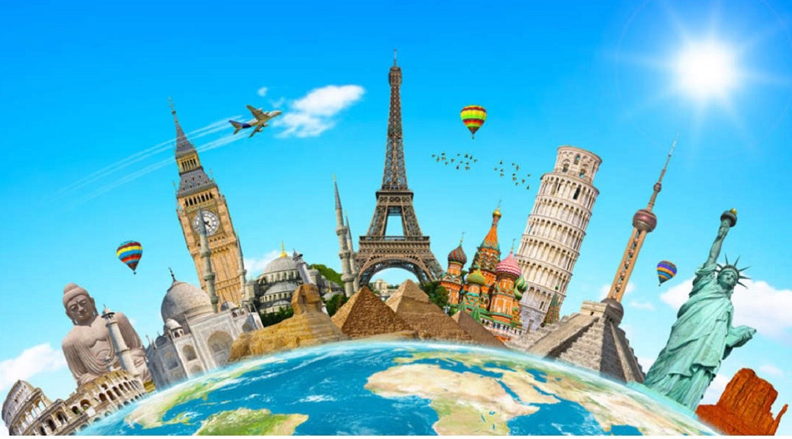

Mis Aspiraciones y Proyectos
| Aspiraciones | ||
|---|---|---|
| Aspiraciones a corto plazo | Aspiraciones a mediano plazo | Aspiraciones a largo plazo |
| Proyectos | Proyectos a corto plazo | Proyectos a mediano plazo | Proyectos a largo plazo |
|---|
Mis Aspiraciones
Aspiraciones a corto plazo |
||
|---|---|---|
| Mis aspiraciones a corto plazo son llegar a ser un técnico en un área que sea de mi agrado y tenga relación con mi carrera profesional a Nivel Superior, siendo un egresado del Centro de Estudios Científicos y Tecnológicos No.3 | ||
Aspiraciones a mediano plazo |
||
|---|---|---|
| Mis aspiraciones a mediano plazo son llegar a ser un ser un estudiante de una escuela del Insttuto Politécnico Nacional en el Nivel Superior, específicamente en UPIBI,la cual es: Unidad Profesional Interdisciplinaria de Biotecnología, así como el ser regular en todas mis materias y ser muy disciplinado. Otra de mis aspiraciones es la de poder llegar a participar en alguna competencia por parte de mi institución, en la cual me destaque por mis conocimientos |
 |
|
Aspiraciones a largo plazo |
||
|---|---|---|
| Mis aspiraciones a largo plazo son terminar mi carrera como Ingeniero en Biotecnología en la Unidad Profesional Interdisciplinaria de Biotecnología (UPIBI), así como poder comenzar a trabajar e innovar en empresas transnacionales y poder viajar por el mundo, desde los lugares más recónditos, hasta los más conocidos |  | |
Mis Proyectos
Proyectos a corto plazo |
||
|---|---|---|
| Mis proyectos a corto plazo son principalmente, el de comenzar a generar ingresos mediante internet, por medio del entretenimiento como los videojuegos, etc. Considero que este proyecto tiene un buen futuro, además lo haré acompañado de grandes amigos, los cuales mencioné en la página "Amigos"ubicada en el "MENÚ SITIO PERSONAL". | ||
Proyectos a mediano plazo |
||
|---|---|---|
| Mis proyectos a mediano plazo principalmente son los enfocados a la innovación, que mediante los conocimientos que adquiriré con mis estudios, podré generar un proyecto enfocado al apoyo de la sociedad, como lo son la elaboración de tecnologías renovables o dispositivos de salud, los cuales son muy demandados. | ||
Proyectos a largo plazo |
||
|---|---|---|
| Mis proyectos a largo plazo principalmente son el formar un negocio que sea rentable aplicando mi profesión, además de trabajar en una empresa, con los cuales yo pueda generar ingresos. Mi negocio se enfoca al desarrollo de productos de salud que sean 100% naturales, lo cual en el mundo actual y el futuro, será de lo más buscado por la gente. | ||